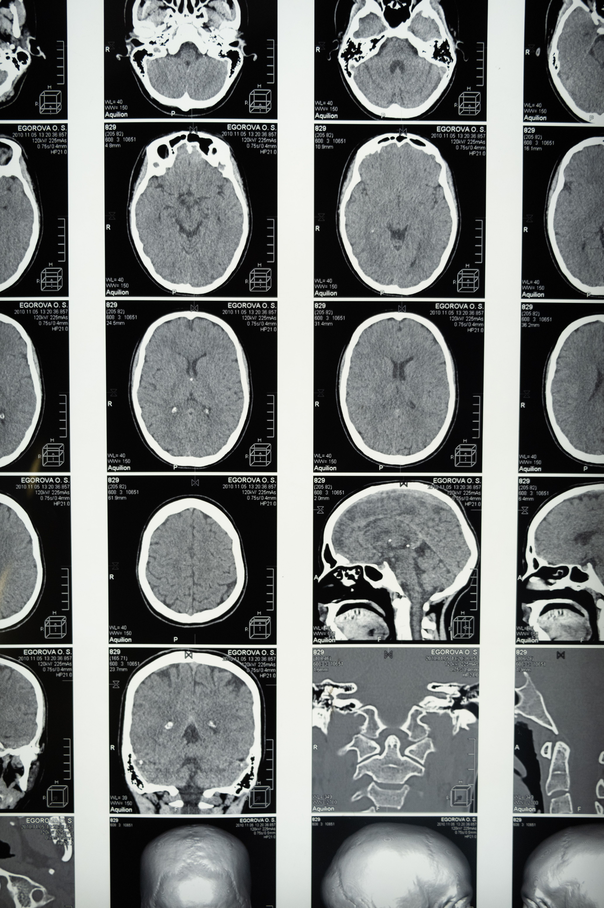

Understanding people through observation, research, and thoughtful inquiry.
I'm Swadha Vyas, a high school senior based in Banswara, working at the intersection of cognitive and social psychology. My work begins in notebooks; questions about attention, memory, and decision-making that I try to answer carefully, one study at a time.

About
02 — Notebook entryI did not start with psychology so much as I started with noticing. As a child I kept a small notebook of things people said and did that seemed to contradict themselves — a habit that, years later, turned out to have a name: behavioral observation.
That instinct has shaped almost everything I've studied since. I'm drawn to the quiet mechanics behind human behavior — the gap between what people intend and what they do, the way memory reshapes itself each time it's recalled, the small biases that guide decisions we assume are rational.
My research so far has moved across cognitive load, social conformity, and educational outcomes, but the through-line is consistent: I want to understand people well enough to help institutions design around how minds actually work, rather than how we wish they did.
Outside of research, I read widely, transcribe old field notes for a university archive, and am, by most accounts, incapable of leaving a library without a stack of books I did not plan to borrow.
Research
03 — Published & ongoing workExamines how compounding academic and administrative decisions affect judgment quality in students without generational precedent for navigating university systems.
Mixed-methods design combining decision-fatigue task batteries with semi-structured interviews across two university cohorts (n=142).
Decision quality declined measurably after sequences of unrelated administrative choices, independent of academic workload.
A replication and extension of classical conformity paradigms, testing whether perceived stakes moderate the strength of social influence.
Controlled lab experiment with confederate groups across two stake conditions; between-subjects design.
Preliminary data collection underway; results expected Q1 2027.
Investigates the relationship between subjective recall confidence and objective accuracy in staged-event eyewitness tasks.
Staged event exposure followed by delayed recall interviews and confidence self-ratings (n=64).
Confidence rose with each retelling even as accuracy declined, most sharply after the second recall.
Interests
04 — Areas of focusProjects
05 — Case studiesFirst-generation students reported feeling overwhelmed within the first 72 hours of orientation, correlating with lower first-semester GPA.
Applied cognitive-load findings from prior research to redesign the decision sequence of orientation week, reducing unnecessary choices and batching administrative tasks.
Piloted with 80 incoming students; self-reported overwhelm dropped by a third in exit surveys.
The clearest lesson was that removing choices, done thoughtfully, can be more respectful of students than offering more of them.
Decades of handwritten field notes from department studies existed only on paper, at risk of loss and unusable for meta-analysis.
Built a lightweight transcription and tagging workflow, working with three student volunteers to digitize and index the archive by method and topic.
Over 400 pages transcribed and indexed; the archive is now searchable and cited in two ongoing studies.
Reading researchers' original uncertainty, in their own handwriting, taught me more about the scientific process than any published paper.
Before a dataset can go on OSF, someone has to check every column and every open-ended response by hand for identifying details. Structured columns are easy to catch; a participant writing "my therapist, Dr. Alan Whitfield, suggested..." inside a free-text answer is not — you'd have to read every response to find it.
Built an open-source, fully local tool (no cloud upload, no telemetry) that runs three deliberately separate checks: direct-identifier detection and redaction across both columns and free text, a k-anonymity check for quasi-identifying combinations like age, gender, and location, and an auto-generated OSF-ready data dictionary — kept as three distinct outputs rather than one opaque score.
A working Streamlit app with a CI-tested pytest suite, MIT-licensed and released publicly. Every generated report carries an explicit disclaimer that it's automated, best-effort screening, not a compliance guarantee.
The hardest design decision was what not to build — merging direct- and quasi-identifier risk into a single score would have been quick, but it would hide which specific thing was actually driving the risk. Keeping them separate and clearly labeled felt more honest, even if it made the tool a little less tidy.
Publications
06 — Citation recordReading List
07 — Books that shaped thinkingNotes on cognition, research, and the odd finding along the way — on the blog.
Awards
08 — Timeline


Curriculum Vitae
09 — Full recordDownload the complete CV
Research experience, coursework, methods training, and references — updated July 2026.